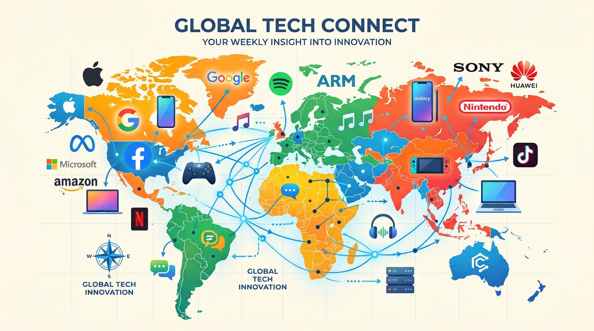

Tech & Business
Tech & Business Brief: Tech Around the World
Where everyday apps really come from, the record Anthropic IPO, Nvidia's quarter, and the visa rules underneath the AI boom.

Our community spans many countries and languages. The tools we rely on every day come from all over the globe, and their origin stories are often a lot more collaborative and borderless than a simple country label implies.
🌍 Tech Around the World
Here's a quick look at where major platforms started, alongside a few surprising backstories:
- United States: Facebook, YouTube, Netflix, and Google Chrome all started here. Instagram and WhatsApp also began in the U.S. before being acquired by Facebook (now Meta), while YouTube joined forces with Google.
- China: TikTok (from ByteDance), WeChat (from Tencent), and Alibaba.
- Russia & Dubai: Telegram was originally founded by Russian brothers Pavel and Nikolai Durov and is now headquartered in Dubai.
- South Korea: Samsung calls Seoul home. Meanwhile, the blockbuster hit game PUBG was designed by Irish creator Brendan Greene and developed/published in South Korea by Krafton (then Bluehole).
- Finland: Clash of Clans and Clash Royale hail from Helsinki-based Supercell.
- Japan: Sony, PlayStation, and Nintendo.
- Norway: The Opera browser started in Oslo and is now under Chinese ownership.
- Sweden: Spotify started here. Minecraft was also created in Sweden by Mojang before being acquired by Microsoft.
- Germany: SoundCloud is based in Berlin, though it was founded by Swedish co-founders Alex Ljung and Eric Wahlforss.
- United Kingdom: Revolut and BBC iPlayer.
- Spain: Glovo and Wallapop.
Innovation isn't confined to one place, and neither is our community.
This week's stories
Anthropic’s IPO became the largest on record. Anthropic priced its offering on November 18 and began trading the next morning on the Nasdaq under the ticker ANT. The company sold 980 million shares at $83 each and raised $81.3 billion, the largest IPO ever recorded. The stock opened at $111.50, roughly 34 percent above the offer price, gave most of that back during the day, and closed at $97.17.
Nvidia posted a record quarter and the stock still fell. Nvidia reported fiscal third-quarter results on November 17. Revenue reached $115.8 billion, more than double the $57 billion it reported a year earlier, with $107.6 billion of that coming from data centers. Earnings landed at $2.68 per share against the $2.47 analysts expected, and the company guided to about $130 billion for the current quarter. Shares closed down 2.9 percent the following day. Strong AI numbers no longer move the market on their own.
The visa rules underneath the boom. The money flowing into AI has not been matched by an easier path for the people who do the work. Three federal rules sit between international graduates and these jobs right now:
| Proposed rule | What it would cost | Status as of Nov 21 |
|---|---|---|
| H-1B fee on cap-subject petitions | $103,265 | Proposed Aug 25. Comments closed Sept 24. No final |
| OPT fee, billed to the school | $70,000 for a first recommendation, $30,000 for each later one | Proposed Oct 8. Comments closed Nov 9. Paperwork comments open until Dec 7. |
| Fixed admission period for F-1 students | No fee, but a hard end date on status | Finalized July 17, then blocked by a federal court. Duration of status still applies. |
Why this matters for our community. International students make up roughly 70 percent of full-time graduate students in AI-related fields, so the people most affected by these rules are the same people building the products in the first two stories. U.S. universities reported 20 percent fewer international bachelor’s enrollments and a 24 percent drop in master’s enrollments earlier this year. For students weighing a computer science path, the takeaway is not to walk away from it. Plan the paperwork as carefully as the coursework, and talk with a designated school official about timing, because these rules apply by the date of a recommendation rather than the date of an application.
This article first appeared in the W.I.S.E.C.E.O. newsletter. W.I.S.E.C.E.O. is a separate nonprofit organization; WISECEO Academy shares it here because it matters to our fellows and families.